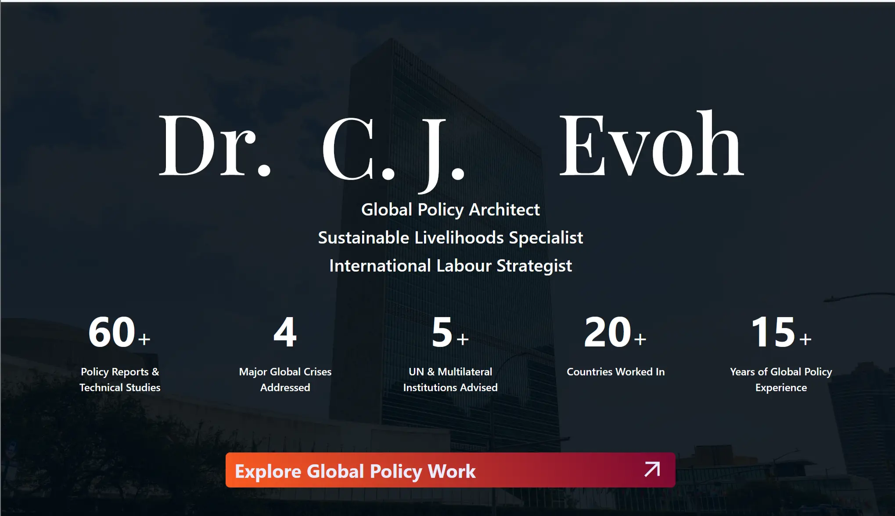
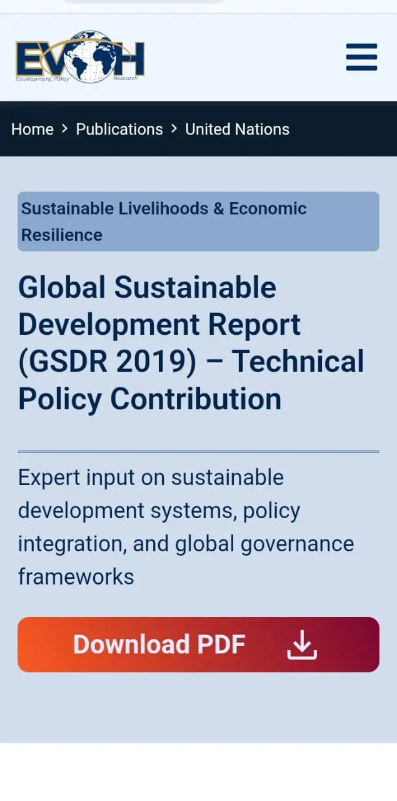

Dr. Chijioke J. Evoh
February 2026 – Present
Digital Strategy, Website Development & Authority Positioning
Global Policy, Development, Multilateral Advisory
Dr. Chijioke J. Evoh operates at the highest levels of global development policy, working with institutions such as the United Nations, International Labour Organization (ILO), and multiple governments across Africa, Europe, and beyond
Despite extensive experience, publications, and international engagements, his digital footprint did not yet reflect the depth, scale, and authority of his work.
The objective was clear:
Transform his presence into a globally recognized digital authority platform — one that reinforces credibility, increases visibility, and positions him as a go-to expert in policy, sustainable livelihoods, and employment systems.
The Strategy was divided in 5 phases: Foundation & Positioning, Execution & Development, Authority Structuring and Authority Building & Global Integration (Ongoing)


Since launch (February 2026):
Real-time client feedback, strategic alignment, and validated execution across the project lifecycle.
Throughout execution, the project evolved through direct client input and high-level strategic alignment. Key refinements included integrating Monitoring & Evaluation (M&E) into the positioning, and structuring country-level engagements such as Ghana and Sierra Leone’s Decent Work Country Programmes (DWCPs).
"...I will appreciate it if you can capture my research consultant assignments for the governments of Ghana and Sierra Leone in their Decent Work Country Programs (DWCPs). Thanks"
Client Feedback Snapshot
.webp)
The project progressed through iterative reviews into final-stage validation, confirming readiness for deployment and expansion phases.
“Seen. Good enough.👍”
— Final client approval before deployment